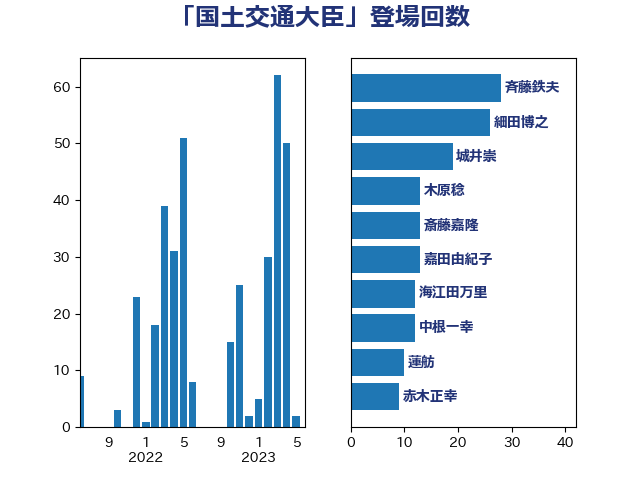

単語「国土交通大臣」

| 斉藤鉄夫 | 公明党 | 28 回 |
| 細田博之 | 自由民主党 | 26 回 |
| 城井崇 | 立憲民主党 | 19 回 |
| 木原稔 | 自由民主党 | 13 回 |
| 斎藤嘉隆 | 立憲民主党 | 13 回 |
| 嘉田由紀子 | 無所属 | 13 回 |
| 海江田万里 | 立憲民主党 | 12 回 |
| 中根一幸 | 自由民主党 | 12 回 |
| 蓮舫 | 立憲民主党 | 10 回 |
| 赤木正幸 | 日本維新の会 | 9 回 |
| 竹内真二 | 公明党 | 7 回 |
| 岸田文雄 | 自由民主党 | 7 回 |
| 山本剛正 | 日本維新の会 | 7 回 |
| 伊藤渉 | 公明党 | 7 回 |
| 赤嶺政賢 | 日本共産党 | 5 回 |
| 足立敏之 | 自由民主党 | 4 回 |
| 山口俊一 | 自由民主党 | 4 回 |
| 大家敏志 | 自由民主党 | 4 回 |
| 加藤鮎子 | 自由民主党 | 4 回 |
| 佐藤英道 | 公明党 | 4 回 |
| 伴野豊 | 立憲民主党 | 4 回 |
| 伊藤孝江 | 公明党 | 4 回 |
| 馬淵澄夫 | 立憲民主党 | 3 回 |
| 赤羽一嘉 | 公明党 | 3 回 |
| 若松謙維 | 公明党 | 3 回 |
| 羽田次郎 | 立憲民主党 | 3 回 |
| 浜田聡 | NHK党 | 3 回 |
| 榛葉賀津也 | 国民民主党 | 3 回 |
| 梶原大介 | 自由民主党 | 3 回 |
| 川田龍平 | 立憲民主党 | 3 回 |
| 三上えり | 立憲民主党 | 3 回 |
| 野田国義 | 立憲民主党 | 2 回 |
| 里見隆治 | 公明党 | 2 回 |
| 道下大樹 | 立憲民主党 | 2 回 |
| 谷田川元 | 立憲民主党 | 2 回 |
| 篠原孝 | 立憲民主党 | 2 回 |
| 稲津久 | 公明党 | 2 回 |
| 福島伸享 | 無所属 | 2 回 |
| 神津たけし | 立憲民主党 | 2 回 |
| 石井正弘 | 自由民主党 | 2 回 |
| 田村智子 | 日本共産党 | 2 回 |
| 津島淳 | 自由民主党 | 2 回 |
| 池畑浩太朗 | 日本維新の会 | 2 回 |
| 根本匠 | 自由民主党 | 2 回 |
| 枝野幸男 | 立憲民主党 | 2 回 |
| 後藤祐一 | 立憲民主党 | 2 回 |
| 山口那津男 | 公明党 | 2 回 |
| 山口壯 | 自由民主党 | 2 回 |
| 小里泰弘 | 自由民主党 | 2 回 |
| 大石あきこ | れいわ新選組 | 2 回 |
| 大口善徳 | 公明党 | 2 回 |
| 吉田宣弘 | 公明党 | 2 回 |
| 古川康 | 自由民主党 | 2 回 |
| 高橋千鶴子 | 日本共産党 | 1 回 |
| 青木愛 | 立憲民主党 | 1 回 |
| 阿部知子 | 立憲民主党 | 1 回 |
| 阿達雅志 | 自由民主党 | 1 回 |
| 長妻昭 | 立憲民主党 | 1 回 |
| 金子恭之 | 自由民主党 | 1 回 |
| 足立康史 | 日本維新の会 | 1 回 |
| 豊田俊郎 | 自由民主党 | 1 回 |
| 西田実仁 | 公明党 | 1 回 |
| 藤岡隆雄 | 立憲民主党 | 1 回 |
| 芳賀道也 | 国民民主党 | 1 回 |
| 紙智子 | 日本共産党 | 1 回 |
| 竹内譲 | 公明党 | 1 回 |
| 秋本真利 | 自由民主党 | 1 回 |
| 福田昭夫 | 立憲民主党 | 1 回 |
| 石川博崇 | 公明党 | 1 回 |
| 石井苗子 | 日本維新の会 | 1 回 |
| 矢倉克夫 | 公明党 | 1 回 |
| 田嶋要 | 立憲民主党 | 1 回 |
| 牧野たかお | 自由民主党 | 1 回 |
| 渡辺周 | 立憲民主党 | 1 回 |
| 梅村聡 | 日本維新の会 | 1 回 |
| 松村祥史 | 自由民主党 | 1 回 |
| 松山政司 | 自由民主党 | 1 回 |
| 東徹 | 日本維新の会 | 1 回 |
| 杉本和巳 | 日本維新の会 | 1 回 |
| 本田太郎 | 自由民主党 | 1 回 |
| 末松信介 | 自由民主党 | 1 回 |
| 朝日健太郎 | 自由民主党 | 1 回 |
| 日下正喜 | 公明党 | 1 回 |
| 斎藤アレックス | 国民民主党 | 1 回 |
| 市村浩一郎 | 日本維新の会 | 1 回 |
| 山東昭子 | 自由民主党 | 1 回 |
| 山本順三 | 自由民主党 | 1 回 |
| 山本博司 | 公明党 | 1 回 |
| 山本佐知子 | 自由民主党 | 1 回 |
| 山下芳生 | 日本共産党 | 1 回 |
| 尾辻秀久 | 無所属 | 1 回 |
| 小山展弘 | 立憲民主党 | 1 回 |
| 小宮山泰子 | 立憲民主党 | 1 回 |
| 寺田稔 | 自由民主党 | 1 回 |
| 宮崎勝 | 公明党 | 1 回 |
| 宮下一郎 | 自由民主党 | 1 回 |
| 室井邦彦 | 日本維新の会 | 1 回 |
| 大野泰正 | 自由民主党 | 1 回 |
| 大西健介 | 立憲民主党 | 1 回 |
| 大岡敏孝 | 自由民主党 | 1 回 |
| 堤かなめ | 立憲民主党 | 1 回 |
| 堀井巌 | 自由民主党 | 1 回 |
| 国定勇人 | 自由民主党 | 1 回 |
| 古川禎久 | 自由民主党 | 1 回 |
| 古川元久 | 国民民主党 | 1 回 |
| 佐々木さやか | 公明党 | 1 回 |
| 伊東信久 | 日本維新の会 | 1 回 |
| 中川郁子 | 自由民主党 | 1 回 |
| 上田清司 | 国民民主党 | 1 回 |
| 一谷勇一郎 | 日本維新の会 | 1 回 |